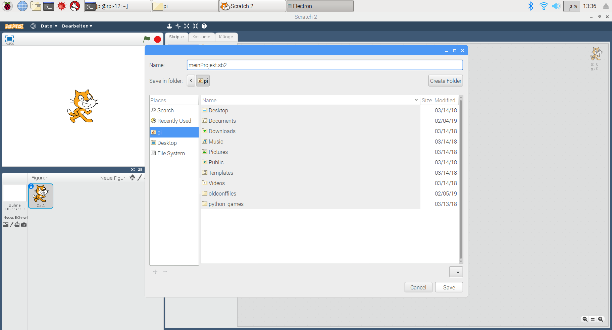
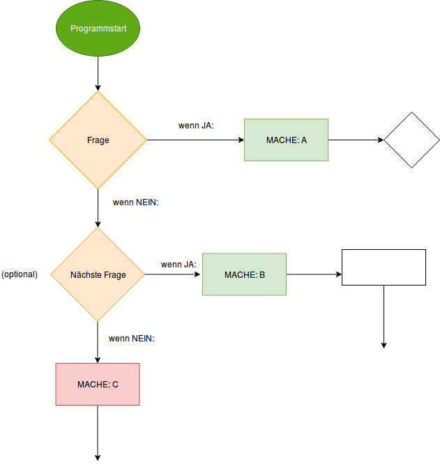
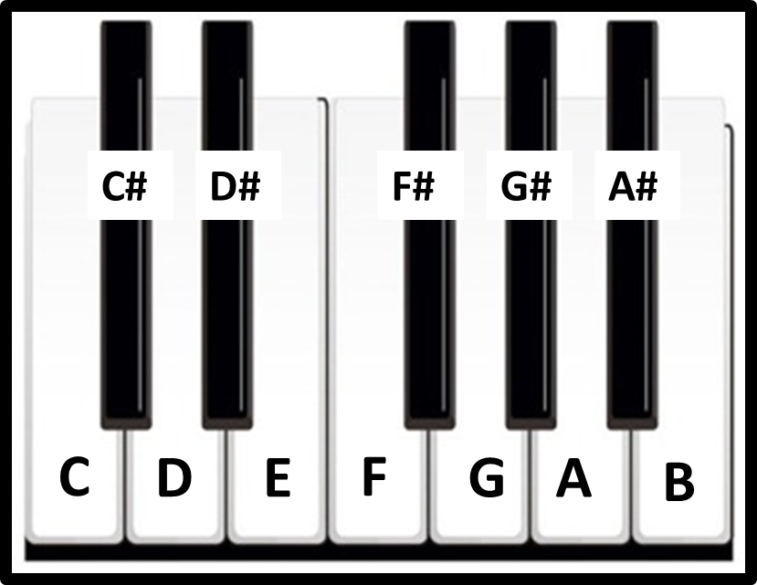

Scratch
 Was ist Scratch?
Was ist Scratch?
Scratch ist eine Programmiersprache, die besonders gut für Einsteiger*innen geeignet ist. Denn ihr müsst euch nicht mit sprachlichen Feinheiten beschäftigen, sondern könnt direkt los programmieren, indem ihr einfach fertige Codeblöcke aneinanderhängt. Ihr könnt Scratch online benutzen, also in eurem Internetbrowser, oder es euch auf euren Computer herunterladen. Auf euren PIs ist es schon vorinstalliert!
Scratch öffnen: Links oben auf die Himbeere → Menü öffnet sich → "Entwicklung" → "Scratch 2"

Und jetzt? Jetzt könnt ihr programmieren! Wie das geht? Ihr könnt nichts falsch machen, also probiert es einfach aus. Wenn ihr noch zusätzliche Infos haben möchtet, schaut euch noch die nächsten Abschnitte an.
Aufbau
Schauen wir uns an, wo ihr bei Scratch was finden könnt:
Bühne Die Bühne ist der Ort, an dem euer Scratch-Projekt abgespielt wird. Positionen auf der Bühne werden in einem Koordinatensystem angegeben, dessen Werte von x = -240 bis x = 240 und y = -180 bis y = 180 gehen. X-Werte verschieben dabei in der Waagerechten, also nach links (negative x-Werte) und nach rechts (positive x-Werte). Y-Werte verschieben in der Senkrechten, also nach oben (positive y-Werte) und nach unten (negative y-Werte). Koordinatensysteme mit x- und y-Richtung kennt ihr wahrscheinlich aus dem Matheunterricht.
Figuren Ihr könnt Figuren auf die Bühne setzen und ihnen Anweisungen geben, sie kostümieren etc. Wenn ihr ein neues Scratch-Projekt öffnet, erscheint als Standardfigur die Scratch-Katze. Ihr könnt aber auch eine andere Figur auswählen oder auch mehrere Figuren auf eure Bühne setzen.

Skripte Unter den Skripten stehen Blöcke, mit denen ihr eurem Programm Anweisungen geben könnt: Ihr sagt eurem Programm, wann es was zu tun hat. Die Blöcke sind in verschiedene Kategorien eingeteilt, in der Kategorie "Bewegung" stehen zum Beispiel alle Blöcke, die deine Figur bewegen. Dabei könnt ihr eure Figur in x- bzw. y-Richtung verschieben oder auch um ihre eigene Achse drehen.

Hintergründe / Bühnenbilder Ihr könnt auch den Hintergrund eurer Bühne verändern:

Projekt speichern
Vielleicht wollt ihr euer Projekt später noch jemandem zeigen oder daran weiterarbeiten? Dann speichert es ab. So könnt ihr es später einfach wieder öffnen und euer Programm auch mitnehmen, indem ihr euch die Programmdatei z.B. per Mail schickt. Zum Speichern geht links oben im Scratch-Menü auf "Datei" → "Projekt speichern".

Es öffnet sich nun ein Fenster, in dem ihr einen Namen auswählen könnt, unter dem ihr euer Projekt speichern möchtet, sowie einen Speicherort. Der Name des Projekts endet auf ".sb". Das sagt dem Computer, was das für eine Datei ist, nämlich eine, die Scratch öffnen kann. Das ist so wie die Dateiendung ".jpg", die an vielen Bilddateien steht.

Hinweis: Scratch gibt es in vielen verschiedenen Sprachen, u.a. in deutsch. Manchmal ist aber nicht alles übersetzt. Deshalb müsst ihr hier auf "Save" klicken statt auf "Speichern", wie ihr das wahrscheinlich kennt. Auch an ein paar anderen Stellen findet ihr englische Begriffe.
Wenn ihr das Programm schon einmal abgespeichert habt und jetzt eure aktuelle Version unter dem gleichen Dateinamen speichern möchtet, fragt euch Scratch, ob ihr das Projekt, das schon unter dem Namen gespeichert ist, löschen und durch das neue Projekt ersetzen möchtet. Wenn ihr die alte Version nicht mehr braucht, könnt ihr das bestätigen, indem ihr auf "Replace" (deutsch: Ersetzen) klickt. Möchtet ihr eure alte Version behalten, dann klickt auf "Cancel" (deutsch: Abbrechen) und überlegt euch einen neuen Namen für das Projekt, das ihr speichern möchtet.

Projekt öffnen
Ihr möchtet euer gespeichertes Projekt wieder öffnen? Wenn ihr Scratch geöffnet habt, geht links oben im Scratch-Menü auf "Datei" → "Load Project"

Es öffnet sich nun ein Fenster, in dem ihr das Projekt auswählen könnt, dass ihr öffnen möchtet. Wenn ihr es nicht findet, vergewissert euch, ob ihr am richtigen Speicherort sucht.

Wenn ihr Scratch online nutzt, könnt ihr auch dort ein Projekt von eurem Computer öffnen.

Steuerung
Du gibst den Takt an! 
Ein Programm wird von oben nach unten, Zeile für Zeile von deinem Computer gelesen und ausgeführt. Der Inhalt dieser Zeilen wird auch "Anweisung" genannt.
Dabei musst du bestimmen, in welcher sinnvollen Reihenfolge der Computer deine Anweisungen ausführen soll.
Beim Programmieren gibt es dafür spezielle Steuerbausteine, mit denen du so einen geordneten Ablauf ausdrücken kannst.
Außerdem kannst du mit diesen Bausteinen auch bestimmen, wie oft ein geordneter Ablauf ausgeführt werden soll oder sogar wann!
Schritt für Schritt ist hier das Motto!
Ereignisse
Mit deinem Scratch-Programm gibst du deinem Computer also Anweisungen, was er in welcher Reihenfolge tun soll. Du musst ihm aber auch sagen, wann er starten soll, dein Programm auszuführen (so nennt man das). Dazu gibt es die Ereignisse. Wenn es ein Startsignal gibt, beginnt der Computer, den nachfolgenden Programmteil auszuführen. Das Startsignal kann zum Beispiel sein, dass eine Taste gedrückt wird. Wenn du dir die Ereignisblöcke in Scratch anschaust, bemerkst du sicher, dass sie ein bisschen anders aussehen, weil es eben die Startblöcke sind.
Schritte wiederholen
Beim Programmieren möchte man oft Verarbeitungschritte öfter als nur einmal ausführen lassen, ohne denselben Code mehrmals zu schreiben. Dafür gibt es in Scratch den Baustein "Wiederholung". Wiederholungen werden allgmein auch Schleifen genannt.
Mit Wiederholungen kann man genau das tun, was der Name vermuten lässt: Einen Codeabschnitt mehrmals ausführen lassen.
Aber wie oft?
Manchmal weiß man das zu Beginn noch nicht genau, wenn man mit dem Programmieren erst neu angefangen hat. Die einfachste Wiederholung, die du ausprobieren kannst, ist die endlose Wiederholung. In Scratch heißt dieser Baustein: "wiederhole fortlaufend". Diese Wiederholung findet also so lange statt, bis du das Programm abbrichst.
Eine andere Variante ist "wiederhole x-mal". Dabei gibst du dem Baustein also eine Zusatzinformation: Die Anzahl der Wiederholungen (x), die ausgeführt werden sollen. Die Schleife "weiß dann von selbst", wann sie fertig ist, ohne dass das Programm manuell gestoppt oder abgebrochen werden muss. Diese Art der Wiederholung ist besonders sinnvoll, wenn dein Programm nach der Schleife weiterlaufen und andere Dinge erledigen soll.
Vielleicht soll dein Programm sogar die Ergebnisse aus einer Schleife in nachfolgenden Verarbeitungsschritten weiter nutzen können?
Wie sagst du der Schleife, was sie wiederholen soll?
Das ist ganz leicht: Du ziehst den zu wiederholenden Codeabschnitt in die Schleife hinein, sodass sie den Codeabschnitt umschließt. Man nennt den von einer Wiederholung umschlossenen Code auch den "Schleifenkörper". Du kannst beliebig viele Codeteile in eine Schleife einpacken. Du kannst sogar Schleifen in Schleifen packen! Dies nennt man auch "Verschachtelung".
Unterschiedlich reagieren
Ein Programm, egal wie groß oder klein, braucht die Möglichkeit, auf unterschiedliche Situationen unterschiedlich zu reagieren. Dazu muss es Entscheidungen treffen. Aber wie?
Wenn...dann
Dafür gibt es in Scratch den Baustein:
- "falls.., dann"
Man nennt diese Konstruktion auch "Fallunterscheidung". Dabei gibst du dem Baustein eine Zusatzinformation: eine Bedingung.
- Wenn die Bedingung eintritt, wird der Codeabschnitt ausgeführt, den dieser Baustein umschließt.
- Wenn die Bedingung nicht eintritt, wird der Codeabschnitt übersprungen.
Da ein Programm von oben nach unten abgearbeitet wird, kannst du beliebig viele Fallunterscheidungen hintereinander durchführen lassen, um mehrere Bedingungen zu testen und daraufhin dein Programm unterschiedlich reagieren zu lassen. Wenn keine zutrifft, werden alle übersprungen.
Mehrere Fallunterscheidungen zu machen wird auch "Verzweigung" genannt. Dabei stellt man sich die Äste eines Baums vor, die in unterschiedliche Richtungen führen können, wenn man sie mit dem Finger nachzeichnet. Vielleicht hilft es dir auch, wenn du dir vorstellst, dass du deinem Programm die "Spielregeln" klar machst.
Wie du eine Bedingung formulierst
Eine Bedingung ist eine Aussage, die mit "wahr" oder "falsch" beantwortet werden kann. Solche Aussagen sind meistens sehr kurze und simple Sätze.
Dazu benötigst du einen Hilfsbaustein: Operatoren. Keine Bange, dabei handelt es sich nur um Vergleiche, die dein Programm verstehen und auswerten kann. Du wirst bestimmt merken, dass du die meisten Operatoren sogar schon kennst!
Hier sind zwei Beispiele für Bedingungen mit Operatoren:
- farbe = blau
- hund1 > hund2
Die Operatoren sind also die "Zeichen zwischen den Werten". Im ersten Beispiel ist der Operator das Gleichheitszeichen.
Weißt du, wie der Operator im zweiten Beispiel heißt? Woher kennst du diese Zeichen?
Tipp: Deine Bedingung als Frage 
Gedanklich kannst du eine Bedingung für dich als Frage übersetzen:
Ist der Wert in "farbe" blau?
Ist die gedrückte Taste die gesuchte Taste?
Sobald dein Progamm an dieser Stelle ankommt, prüft es die Aussage, d.h. es führt einen Wertevergleich mittels Operator durch. Kommt es zu dem Ergebnis "wahr", führt es den nachfolgenden Codeabschnitt aus.
Es gibt noch eine erweiterte Variante dieses Bausteins:
- falls..,dann. sonst:
Was passiert, wenn das Ergebnis des Vergleichs in einer Bedingung "falsch" ergibt und du so einen Baustein verwendest? Probiere es aus und schau, wie dein Programm an der Stelle verläuft.
Wo hat die Bedingung ihren Platz?
Damit die Bedingung ihren Zweck erfüllen kann, muss sie am Anfang stehen und wird in das Feld nach dem "wenn" eingetragen.
Wenn du Vergleiche auswählst, achte dabei auf die eckige Form des Bedingungs-Feldes in deinem Steuerbaustein - du kannst nur *passende Elemente aus der Kategorie "Operatoren" hineinziehen.
Bedingungen kann man sogar kombinieren. Darüber erfährst du etwas im nächsten Absatz. Vorher solltest du die besprochenen Steuerbausteine in Scratch praktisch nachvollziehen, denn Programmieren bedeutet auch Dinge auszuprobieren und zu experimentieren. Steuerelemente werden in Scratch in orange hervorgehoben.

Komplexere Entscheidungen
Manchmal muss man erst mehrere Informationen sammlen und auswerten, um eine Entscheidung treffen zu können.
Deshalb kannst du deinem Programm mitteilen, dass mehrere Bedingungen gleichzeitig "wahr" sein müssen, um zu entscheiden, ob ein Codeabschnitt ausgeführt wird. Das heißt, dein Programm muss mehrere Vergleiche durchführen, bevor es etwas tun darf. Dazu gibt es den Baustein "und".
Zum Beispiel: "farbe = blau" und "leertaste gedrückt".
Gedanklich kannst du es so übersetzen: Ist der Wert von "farbe" blau und ist gleichzeitig die Leertaste gedrückt? Gleichzeitig ist hierbei sehr wichtig!
Wie entscheidet dein Programm, wenn du den Baustein "nicht" oder "oder" benutzt? Probier' es aus!
Puh, Gedankenchaos? 
Wenn du dir nicht sicher bist, wie dein Programm an einer kniffeligen Stelle verlaufen soll, hilft es Stift und Papier zur Hand zu nehmen und zu visualisieren.
Mit einem Diagramm kannst du deine Gedanken ordnen und erst einmal zeichnerisch Ideen ausprobieren. Dabei soll das vorgestellte Flussdiagramm ein Vorschlag sein:

An jeder Verzweigung (Rautenform) stellst du gedanklich deine Frage. Dann formulierst du sie als Bedingung für dein Programm um. Nutze dafür die Operatoren.
Anschließend überlegst du dir, was passieren soll (Rechteck), wenn die Frage mit "wahr" bzw. "ja" beantwortet wird.
Dann überlegst du dir, was passieren soll, wenn sie mit "falsch" bzw. "nein" beantwortet wird.
Die möglichen Wege für deinen Programmfluss zeichnest du als Zweig (Pfeil).
So kannst du dir deinen eigenen "Fahrplan" skizzieren.
Dein Diagramm muss nicht "formal richtig" sein! Du kannst es so verändern, wie es für dich am besten funktioniert.
Mit Verzögerung reagieren
Zur Erinnerung: ein Programm wird von oben nach unten, Zeile für Zeile abgearbeitet. Es hat keinen Grund, Teile zu überspringen oder an einer Stelle absichtlich auf etwas zu warten, es sei denn du sagst es ihm.
Man spricht auch davon, dass das Programm "pausiert". Wenn ein Program "hängt" ist das hingegen ein anderes Warten, als das, wovon hier die Rede ist, das ist dann ein nicht gewolltes Warten. Wann könnte es von Nutzen sein, dass ein Programm an einer Stelle pausiert, bevor es den nächsten Schritt ausführt?
Wie lange warten?
In Scratch hast du zwei Möglichkeiten eine Pause einzubauen. Die einfachste Pause, die du ausprobieren kannst, ist die mit einer festen Wartezeit. Dazu bietet dir Scratch den Baustein "warte x Sekunden" an. Als Zusatzinformation gibst du eine Zahl (x) als Wartezeit ein. So garantierst du, dass an einer bestimmten Stelle in deinem Programm immer pausiert wird und die Pause immer die gleiche Dauer hat. Oft weiß man zu Beginn noch nicht genau, wie lang eine Pause sein muss. Probiere verschiedene Werte aus!
Flexiblere Pausen ...
Manchmal muss die Pause etwas länger oder etwas kürzer sein und man findet einfach keinen Wert, der passt! Du hast die Möglichkeit "passgenaue" Pausen zu bestimmen. In Scratch heißt dieser Baustein "warte bis". Zum Beispiel kannst du so lange warten, bis ein bestimmtes Ereignis stattgefunden hat. Dazu brauchst du etwas, das du schon kennen gelernt hast: Die Bedingung.
Anstelle einer Wartezeit bestimmst du nun also eine "Wartebedingung".
Mit deinem Wissen über Bedingungen, Operatoren und Ereignisse kannst du nun verschiedene Wartebedingungen ausprobieren. Falls es dir noch schwer fällt, versuche, dein Problem als Flussdiagramm auf Papier aufzumalen oder frag die Mentoren und Mentorinnen .
Klone 
Oft leiht man sich Begriffe und Ideen aus anderen Wissenschaften, um Mechanismen oder Programmierkonzepte anschaulicher zu benennen. Hier bedient man sich der Idee des "Klonens" aus der Biologie. Sicher hast du schon einmal davon gehört: Ein Klon ist eine Kopie eines Lebewesens. Dieses Lebewesen ist aus exakt den gleichen Informationen wie das Original aufgebaut.
Diese Idee lässt sich übertragen: In Scratch kannst du mehrere Lebewesen vom gleichen "Bauplan" zum Leben erwecken und sie individuell steuern. Der Bauplan könnte z.B. eine Grafik oder ein Lebewesen sein, das bereits existiert.
Der Vorteil liegt darin, dass dein Computer nur einmal den Bauplan "laden" muss. Man nennt einen grafischen Bauplan auch "Spritesheet". "Sprite" ist einfach die englische Bezeichnung für eine Figur; ein "Spritesheet" ist also einfach eine Blatt, auf dem die Beschreibung für die Figur steht.
Um einen Klon zu erzeugen wählst du den Baustein "erzeuge Klon von" und gibst als Zusatzinformation deinen Bauplan mit. Mit dem Baustein "wenn ich als Klon entstehe" kannst du der Kopie direkt sagen, wie sie sich verhalten soll, sobald sie auf dem Bildschirm erscheint. So weiß ein Klon direkt, was es zu tun hat. Übrigens wird nicht nur das grafische Aussehen eines Originals kopiert, sondern auch seine Fähigkeiten, wie z.B. laufen oder springen. Diese Fähigkeiten nennt man auch "Scripte".
Denke daran, dass dein Computer begrenzte Ressourcen hat. Was passiert, wenn du immer mehr Klone erstellst? Dieses Problem müssen z.B. auch Spieleentwicklerinnen berücksichtigen. Welchen Baustein könntest du nutzen, um die Menge der Klone unter Kontrolle zu halten?
Weiteres
Variablen
Variablen sind Platzhalter für Werte. Sie bestehen aus einem Namen und einem Wert. Mit diesem Namen könnt ihr dann arbeiten, als würdet ihr den Wert benutzen. Ihr könnt also damit rechnen, wenn es eine Zahl ist, oder die Variable in Bedingungen abfragen. Auch Variablen kennt ihr wahrscheinlich schon aus dem Matheunterricht, da heißt die Variable meistens x. Variablen sind praktisch, wenn ihr einen Wert an verschiedenen Stellen benutzen möchtet oder wenn ihr euch Werte merken möchtet. Ihr könntet zum Beispiel zählen wollen, wie oft eine Schleife sich wiederholt und dazu eine Variable zaehler erstellen, die jedes mal um 1 erhöht wird. Am besten gibt man Variablen einen Namen, der ausdrückt, wofür die Variable steht, also zum Beispiel zaehler und nicht tannenbaum.
Weitere Bausteine
Ein paar Bausteine haben wir nicht im Detail besprochen, das macht aber nichts. Du musst nicht erst alles verstanden haben, bevor du anfangen kannst. Probiere aus, was passiert, wenn du z.B. "stoppe" auswählst. Wenn du es genauer wissen willst, lohnt sich ein Blick in die Dokumentation.
Klänge
Klänge findet ihr in der pinken Block-Kategorie. Sie können dazu eingesetzt werden, ganze Musikstücke oder kurze Sounds abzuspielen oder zu stoppen. Ebenfalls können Effekte und Lautstärke bearbeitet werden.
Kostenlose Sounds
Auf diesen Seiten findet ihr kostenlose Sounds. Bitte vergesst nicht die Lizenzen und Urheber*innen anzugeben. * http://www.bfxr.net/ * https://www.freesound.org/
Kostenlose Musik
Auf diesen Seiten findet ihr kostenlose Musik. Bitte vergesst nicht die Lizenzen und Urheber*innen anzugeben. * http://soundbible.com/ * http://incompetech.com/music/royalty-free/
Klangblöcke
* spiele Klang () ganz: Spielt den Klang () ganz ab, bevor der nächste Block drankommt. * spiele Klang (): Spielt einige Millisekunden eines Klangs () ab und geht dann zum nächsten Block. * stoppe alle Klänge: Stoppt global alle Klänge, die wiedergegeben werden. * ändere Effekt [] um (): Ermöglicht das Verändern der Tonhöhe sowie der Balance. Die Balance bestimmt, ob Klänge mehr über den linken oder rechten Lautsprecher ausgegeben werden. Der Block kann mehrfach aufgerufen und die Höhe oder Balance um den angebebenen Wert verändert werden. * setze Effekt [] auf (): Ermöglicht das Verändern der Tonhöhe sowie der Balance. Die Balance bestimmt, ob Klänge mehr über den linken oder rechten Lautsprecher ausgegeben werden. Der Block setzt die Höhe oder Balance auf einen bestimmten Wert. Ein mehrfaches Aufrufen des Blockes hintereinander ist somit effektlos. * schalte Klangeffekte aus: Löscht alle derzeit vorhandenen Klänge. Die aktuelle Wiedergabe wird jedoch nicht unterbrochen. * ändere Lautstärke um (): Ändere die Lautsärke um den angegebenen Wert. * setze Lautstärke auf ()%: Setze die Lautstärke auf den angebenen Wert. * Lautstärke: In dieser Variable ist die aktuelle Lautstärke gespeichert.
Übungsaufgaben
1. Hello World
* Wenn auf die Fahne geklickt wird, soll die Katze "Hello World!" sagen. Du kannst in allen Aufgaben auch eine andere Figur als die Katze auswählen.
2. Größenveränderungen
* Ändere die Größe der Katze um eine "Zufallszahl" zwischen "-50" und "50", wenn diese angeklickt wird.
3. Erste Schritte
* Lasse die Katze um eine feste Schrittzahl in die Richtung laufen, deren Pfeil gedrückt wird. Bei dem Pfeil nach unten läuft sie so um beispielweise -12 Schritte in y-Richtung.
4. Springen
* Wenn auf die Fahne geklickt wird, soll die Katze anfangen, sich zu bewegen: Jedes Mal, wenn die Leertaste gedrückt wird, soll sie ihren y-Wert um "10" ändern. Andernfalls soll sie den y-Wert um "-5" verändern.
5. Springen 2.0
* Verändere die Aufgabe "Springen" so, dass der y-Wert, sobald er kleiner oder gleich 0 ist, nicht mehr um -5 verringert wird.
6. Variablen
- Setze eine Variable mit Namen Begrüßung auf deinen Namen. Lasse die Katze den Inhalt der Variablen "Begrüßung" sagen.
7. Fragen
* Wenn die Fahne angeklickt wird, soll eine Variable "Richtige Antwort" auf "INNOQ" gesetzt werden. Danach soll die Frage "Bei welcher Firma bist du heute?" gestellt und auf die Antwort gewartet werden. Wenn die eingegebene "Antwort" nicht der "richtigen Antwort" entspricht, soll die Frage "wiederholt" werden.
8. Gegen die Wand
* Setze die Katze beim Drücken der grünen Flagge auf den Startwert x = -150. Die Katze soll nun beim Drücken der rechten Pfeiltaste nach rechts laufen. Wenn ihr x-Wert dabei größer als "150" ist, sendest du eine Nachricht "Wand!" an alle. Denn dein Programm kann aus mehreren Programmteilen bestehen, die über Nachrichten miteinander kommunizieren können: Ein Programmteil sendet eine Nachricht aus, die von allen anderen Programmteilen empfangen werden kann. Wird die Nachricht "Wand!" empfangen, setzt du den x-Wert der Katze wieder auf "-150".
9. Ton ab
* Verändere die Aufgabe "Gegen die Wand" so, dass jedes Mal, wenn die Nachricht "Wand!" emfangen wird, ein Klang abgespielt wird. Bei jeder "Wand!"-Nachricht soll zudem der Effekt "Höhe" um "10" erhöht werden.
10. Auf die Figur, fertig, los!
* Wenn die Fahne geklickt wird, soll "20" mal Folgendes passieren: Die Katze soll "1" Sekunde zu einer "Zufallsposition" gleiten (dafür gibt es eine extra Variable). Falls ihre x-Position dabei größer als 150 oder kleiner als -150 bzw. ihre y-Position größer als 100 oder kleiner als -100 ist, soll ein Klon von "mir selbst", also der Katze, erstellt werden. Des Weiteren soll der Effekt "Farbe" um "15" geändert werden. * Wenn ein Klon entsteht, soll genau dasselbe passieren. Nur soll dies nicht "20" mal wiederholt werden.
11. Malen
* Füge den Blockkategorien die Erweiterung "Malstift" hinzu (zu finden bei den Skripten bzw. in der linken Leiste). * Wenn auf die Fahne geklickt wird, sollen alle gemalten Linien gelöscht werden. * Wenn auf die Fahne geklickt wird, sollen fortlaufend "Abdrücke" der Katze erstellt werden. Die Katze selbst soll sich immer zu dem Mauszeiger drehen und x Schritte laufen, also Richtung Mauszeiger laufen. Vom Rand soll die Katze abprallen. * Lasse die Katze sich immer nach rechts um eine "Zufallszahl" z drehen und ändere die Farbe der Katze währenddessen ebenfalls um z.
12. Fangen
* Verändere die Aufgabe "Erste Schritte" so, dass du zwei Figuren in der Szene hast, z.B. zusätzlich zu der Katze noch einen Fisch. Der Fisch soll, wenn die grüne Fahne angeklickt wird, wiederholt in "3" Sekunden zu "Zufallsposition" gleiten. Wird er dabei von der Katze berührt, soll eine Nachricht "Gefangen" an alle gesendet werden. Wird die Nachricht "Gefangen" empfangen, sollen alle anderen Skripte des Fisch stoppen und er soll für "2" Sekunden "Du hast mich" sagen.
 Der Makey Makey
Der Makey Makey
Einleitung - Was ist das?
Der Makey Makey ist ein sogenanntes Invention Kit. Invention steht für "Erfindung" und ein Kit ist eine Art Werkzeugkoffer, der dich dafür ausrüstet, allerlei coole Dinge zu erfinden. Mit dem Makey Makey kannst du Controller erfinden. Controller sind einfach Geräte, mit denen du etwas steuern kannst. Du kennst sicherlich Controller für Spielekonsolen.
Deinen selbstgebauten Controller verbindest du über den Makey Makey mit deinem Computer und kannst dann mit dem Controller den Computer steuern, inbesondere dein Scratch-Programm. Controller können zum Beispiel Instrumente sein, die du etwa aus Pappe und Alufolie basteln kannst und über den Makey Makey an deinen Computer anschließt. Dein Computer kann dann mit einem Programm wie zum Beispiel Scratch Töne erzeugen, es gibt eine große Auswahl an Tönen für Piano, Gitarre und andere Instrumente.
Es gibt allerdings noch viel mehr Controllererfindungen, die mit dem Makey Makey möglich sind, im Grunde kannst du alle möglichen Alltagsgegenstände mit ihm verbinden und somit in Tasten des Computers "umwandeln". Wenn du ihn zum Beispiel an eine Banane anschließt und auf sie drauf drückst, leitet der Makey Makey das elektronische Signal an deinen Computer weiter. Dieser denkt dann, du hättest eine seiner Tasten gedrückt. Für welche Taste die Banane steht, legst du fest, indem du bestimmte Kabelsteckplätze des Makey Makeys nutzt.
Bananen eignen sich gut, aber nicht alle Gegenstände lassen sich mit dem Makey Makey verbinden. Voraussetzung ist, dass sie elektrischen Strom leiten können, also leitfähig sind. Obst, Gemüse, Pflanzen, Menschen, Bleistift-Schrift, Münzen, Besteck und vieles mehr sind leitfähig. Wenn du nicht weißt, ob ein Gegenstand Strom leitet, probier es doch einfach aus. Nicht alle Tasten deines Computers können vom Makey Makey angesteuert werden. Allerdings reichen die Pfeiltasten, die linke Maustaste, die Leertaste und die Buchstaben WASDFG aus, um viele Computerspiele zu steuern oder in Scratch selbstgeschriebene Programme ablaufen zu lassen, die dann zum Beispiel die Töne deines Instrumentes abspielen. Wenn du schon mal einen ersten Eindruck gewinnen willst, schau mal hier.
Aufbau / Zusammenstecken
Wenn du deine rote Makey Makey-Box aufmachst, siehst du zuerst ganz viele kleine Kabel. Die sieben bunten Kabel nennt man auch Krokodilklemmen, da ihre zwei Enden wie das Maul eines Krokodils aussehen. Erkennst du das rote USB-Kabel? Sein großes Ende gehört in den USB-Slot deines Computers, das kleine Ende gehört in den Makey Makey. Wenn die grünen Lichter kurz aufleuchten, hast du alles richtig gemacht und der Makey Makey ist mit deinem Computer verbunden. Die rote Lampe auf der Makey Makey-Rückseite leuchtet die ganze Zeit, während Makey Makey und Computer verbunden sind. Sicher poppt auf deinem Bildschirm nun ein Fenster auf, dieses kannst du getrost wegklicken (da geht es nur um die Installation von Treibern, die für uns hier unwichtig sind).
Du kannst den Makey Makey jetzt schon benutzen. Probier mal aus, was passiert, wenn du auf die verschiedenen Metallflächen drückst. Es passiert nichts? Das liegt daran, dass die Erdung noch fehlt. Was ist denn das? Damit alles funktioniert, muss ein geschlossener Stromkreislauf entstehen. Teil dieses Stromkreislaufs bist du selbst, denn du drückst ja auf den Makey Makey. Zur Erdung nutzen wir die rote Krokodilklemme: Verbinde mit ihr deinen Körper (du kannst einfach eine der Metallklemmen festhalten) und den Makey Makey (stecke die andere Klemme an eines der Löcher der roten Leiste, auf der "Earth" steht). Was passiert, wenn du jetzt mit der anderen Hand auf eine weitere Metallfläche drückst? Klappt das auch, wenn deine Partnerin drückt?
Nun wollen wir mit dem Makey Makey Controller bauen. Schauen wir uns die anderen Kabel an. Was fehlt denn noch? Der Makey Makey ist mit deinem Computer verbunden, aber noch nicht mit - zum Beispiel - der Banane. Um also den Makey Makey mit der Banane zu verbinden, kannst du die restlichen Krokodilklemmen nutzen; sechs Stück sollten noch in deinem Kit sein. Sie sind dafür gedacht, dass du sie mit dem einen Ende in einen von dir gewählten Slot ( = Steckplatz) im Makey Makey klemmst, mit dem anderen zum Beispiel an die Banane. Der Slot, den du benutzt, kodiert die Taste, die auf deinem Computer "gedrückt" werden soll, wenn du die Banane berührst.
Du könntest also zum Beispiel eine Banane, eine Mandarine und ein Knetgummi nehmen, alle drei mit jeweils einer Krokodilklemme verbinden und diese in die drei Steckplätze "W", "A" und "D" auf dem Makey Makey stecken (schau mal nach, ob du sie findest). Damit legst du fest, dass beim Drücken auf die Banane die Taste "W" simuliert wird, beim Drücken auf die Mandarine die Taste "A" und beim Drücken auf das Knetgummi "D". Falls du sie nicht findest, wende dich an einen der Mentoren und Mentorinnen , sie helfen dir gerne weiter! Mit dem Anfassen der Banane oder der bunten Krokodilklemme kannst du das Drücken der Leertaste simulieren oder auch die Pfeiltasten, die linke Maustaste oder die Buchstaben-Tasten WASDFG (dafür brauchst du dann noch die kleinen weißen Kabel, frag gerne einen der Mentoren und Mentorinnen ). Dafür einfach die Krokodilklemme an eines der entsprechenden Löcher im Makey Makey anklemmen.

Coole Dinge bauen
Deiner Kreativität sind nun keine Grenzen gesetzt! Was auch immer dir einfällt, du kannst fast alles mit dem Makey Makey bauen...
DIY Piano
Heute werdet ihr ein gezeichnetes Piano mittels Makey Makey und Scratch in ein funktionsfähiges Musikinstrument verwandeln!
Zutaten:
- Papier und Bleistift für das Tastenfeld
- 12 Krokodilklemmen und Vebindungsdrähte
- eine Makey Makey Platine
- eine USB Verbindung zwischen eurem Computer und dem Makey Makey
- die passenden Steuerungsbausteine im Scratch Editor
- Pianotöne
1.Das Tastenfeld
Damit ihr das Piano nachher auch spielen könnt, braucht ihr natürlich auch eine Möglichkeit eure Finger zu platzieren. In der Softwareentwicklung spricht man dabei auch vom "Human Interface" oder der "Mensch und Computer Interaktion". Euer Tastenfeld zeichnet ihr mit dem Bleistift aufs Papier. Anders als bei einem echten Piano, wo die Tasten dicht nebeneinander liegen, müsst ihr bei dem DIY Piano darauf achten, dass sich die Konturen eurer ausgemalten Tasten nicht berühren. Lasst also etwas Platz zwischen den einzelenen Tasten. Ein echtes Piano hat außerdem weiße und schwarze Tasten, da ihr aber mit Bleistift zeichnet, werden beim DIY Piano alle Tasten schwarz sein.
Insgesamt gibt es 7 Ganztöne (C bis B) und 5 Halbtöne (C# bis A#).
Zur Hilfe gibt es hier eine Übersicht :

2. Die Krokodilklemmen
An jede Taste des Tastenfeldes wird nun ein Ende einer Krokodilklemme geklemmt. Welches Ende du nimmst, ist egal.
3. Der Makey Makey
Das andere Ende der Krokodilklemme wird nun an bestimmten Stellen der Platine geklemmt. Wir nutzen dabei die Verbindungstellen für die Tasten W, A, S, D, F, G, die Pfeiltasten die Leertaste und die Mouse. Wenn ihr euch den Makey Makey genau anseht, werdet ihr diese Stellen finden und bemerken, dass sie unterschiedlich verbunden werden müssen. An einige dieser Stellen könnt ihr die Krokodilklemme direkt anschließen. Bei anderen müsst ihr euch eine "Brücke" überlegen. Schaut euch dazu eure restlichen Materialien noch einmal genauer an.
4. Die USB Verbindung
Bisher habt ihr Folgendes erreicht: Die Klemmen sind das Verbindungsstück zwischen jeder Pianotaste mit dem Makey Makey. Nun fehlt noch die Verbindung des Makey Makey an den Computer. Das geht ganz leicht über den USB-Anschluss. Sobald der Computer den Makey Makey registriert hat, kann er Eingabesignale an euren Computer senden. Die Eingabesignale entstehen, wenn ihr eine gezeichnete Pianotaste berührt.
5. Die Steuerung
Der Makey Makey kann nun Eingabesignale senden, aber was soll der Computer damit anfangen? Wie soll er auf welche Eingabe reagieren?
Genau das könnt ihr nun mit Scratch festlegen. Dazu müsst ihr euch die Verbindungen zwischen den einzelnen Pianotasten und den Makey Makey Verbindungspunkten anschauen. Welche Pianotaste führt wo hin?
Am besten schreibt ihr euch eine Übersicht auf Papier auf. Dann könnt ihr mit den Bausteinen in Scratch gezielt auf die Eingabe reagieren.
Ein Beispiel: Wenn die Pianotaste 'C' mit der Stelle 'W' am Makey Makey verbunden ist, dann sendet er 'W' an deinen Computer.
In deiner Übersicht könntest du dir z.B. merken: C → W.
Gelesen: "Taste C sendet Signal W".
Mit Scratch kannst du nun gezielt steuern, was dein Computer tun soll, wenn ein 'W' als Eingabesignal ankommt. Bestimmt möchtest du, dass ein bestimmter Ton, nämlich der Ton C gespielt wird. Probiere aus, welche Bausteine dir dabei helfen könnten. Vielleicht fällt dir ein, in welcher Bausteinkategorie sie sich befinden könnten?
6. Die Töne
Die Töne für das Piano müsst ihr euch glücklicherweise nicht einzeln im Internet zusammensuchen, denn Scratch bietet euch eine ganze Sammlung verwendbarer Töne an. Dazu navigiert ihr oberhalb des Editorfensters in den Tab "Klänge". Unten links findet ihr ein kleines Laustprecher-Icon. Wenn ihr den Mauszeiger darüber legt, öffnet sich ein kurzes Menü. Mit einem Klick auf die Lupe öffnet ihr die Klangsammmlung. Hier findet ihr alle Töne, die ihr braucht, mit Ausnahme der Halbtöne.
Wie könntet ihr diese in eurem Code trotzdem erzeugen?
Zur Hilfe könnt ihr euch hier anhören, wie sich ein durch euren Coden erzeugter Halbton anhören sollte: Zum virtuellen Piano
Achtet darauf, dass ihr als erstes herausfindet, auf welcher Taste des virtuellen Pianos euer C Ton liegt. Von dort aus interessieren euch die 5 folgenden Halbtöne (die schwarzen Tasten).
Weitere Aufgabenideen
Bestimmt kennt ihr eines der nachfolgenden Spiele. Könnt ihr euch aber auch vorstellen, dieses selbst einmal zu programmieren? Traut euch! Mit Scratch ist das gar nicht so schwer.
- Pong
- Space Invaders
- Fische Fangen
- Wrack'A'Mole